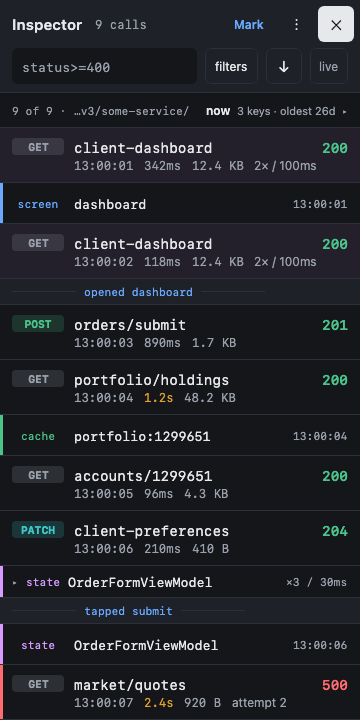

In-app overlay
A draggable pill shows the latest call. Tap it and you get the full inspector, from one Compose codebase on Android, iOS and desktop.
- One row per attempt, so redirects and retries are never collapsed
- Foldable JSON tree, headers, cURL copy
- Markers and app state on the same timeline